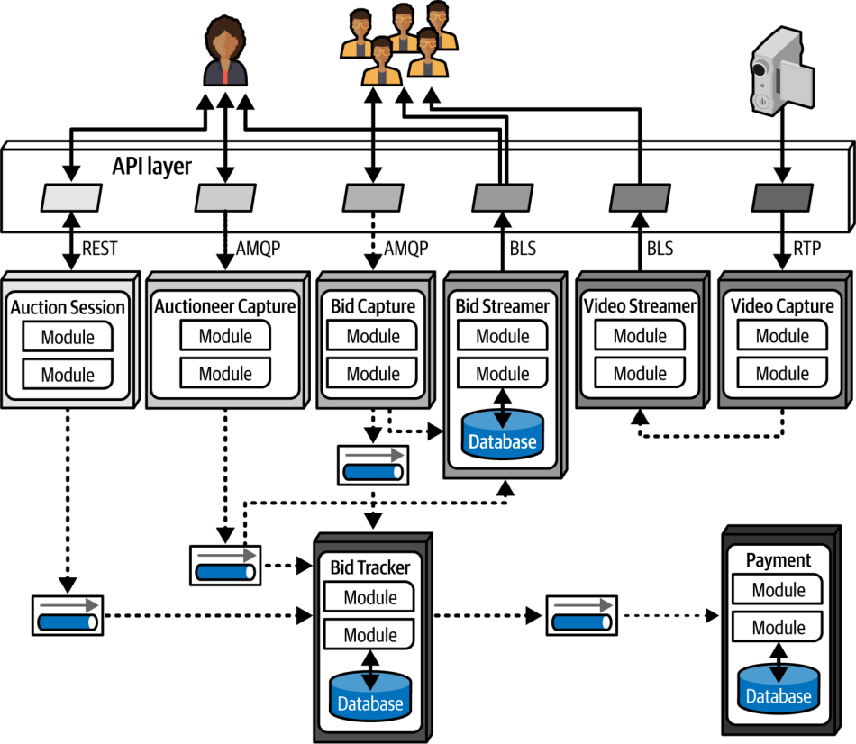

نمودارکشی (ادامه)
استانداردهای نمودارکشی: UML، C4 و ArchiMate
صنعت نرمافزار برای نمودارهای فنی از چند استاندارد رسمی استفاده میکند. در اینجا سه مورد از پرطرفدارترین آنها را بررسی میکنیم.
UML
Grady Booch، Ivar Jacobson و Jim Rumbaugh استاندارد زبان مدلسازی یکپارچه (Unified Modeling Language یا UML) را در دههٔ ۱۹۸۰ پدید آوردند تا فلسفههای طراحیِ رقیبِ خود را یکپارچه کنند. قرار بود این استاندارد بهترینِ همهٔ رویکردها باشد، اما مانند بسیاری از چیزهایی که کمیتهای طراحی میکند، بیرون از سازمانهایی که استفاده از آن را الزامی کرده بودند اثر چندانی نگذاشت. معماران و توسعهدهندگان هنوز از نمودارهای کلاس (class diagrams) و نمودارهای توالیِ (sequence diagrams) UML برای انتقال ساختار و گردشکار استفاده میکنند، اما بیشتر انواع دیگرِ نمودارهای UML از رواج افتادهاند.
C4
C4 یک فن نمودارکشی است که Simon Brown میان سالهای ۲۰۰۶ تا ۲۰۱۱ برای رفع کاستیهای UML و نوسازیِ رویکرد آن پدید آورد. «چهار C» در C4 عبارتاند از:
- بافتار (Context): کل بافتار سیستم، شامل نقشهای کاربران و وابستگیهای بیرونی.
- کانتینر (Container): مرزهای استقرارِ فیزیکی (و اغلب منطقی) و کانتینرهای درون معماری. این دیدگاه نقطهٔ تلاقیِ خوبی برای تیمهای عملیات و معماران فراهم میکند.
- مؤلفه (Component): دیدگاه مؤلفهای سیستم؛ این دیدگاه بهخوبی با نگاه معمار به سیستم همخوانی دارد.
- کلاس (Class): C4 از همان سبک نمودارهای کلاسِ UML استفاده میکند که اثربخشاند؛ بنابراین نیازی به جایگزینی آنها نیست.
C4 برای هر شرکتی که میخواهد یک فن نمودارکشیِ استاندارد برگزیند، جایگزین خوبی است. پدیدآورندگان آن سالهاست فعالاند و هواداران فراوانی گرد آوردهاند. نکتهٔ مهم اینکه C4 پابهپای تغییرات بومسازگان (ecosystem) توسعهٔ نرمافزار پیش رفته و برای بهرهگیری از قابلیتهای تازه گسترش یافته است. بسیاری از ابزارهای نمودارکشی الگوهایی برای نمودارهای C4 دارند و بومسازگان C4 ابزارها و چارچوبهایی برای کمک به معماران در بر دارد. C4 برای مؤلفهها، خطوط، کانتینرها، پایگاهدادهها و دیگر مصنوعات رایج استاندارد تعریف میکند.
نمودار C4 طراحی دادهٔ تکپارچهٔ ماژولارِ Silicon Sandwiches در شکل ۲۳-۲ آمده است.

ArchiMate
ArchiMate (واژهای آمیخته از architecture و animate) یک زبان مدلسازی (modeling language) آزاد برای معماری سازمانی از The Open Group است که برای توصیف، تحلیل و بصریسازیِ معماریها درون حوزههای کسبوکار و میان آنها به کار میرود. ArchiMate زبان مدلسازیِ سبکتری برای بومسازگانهای سازمانی ارائه میکند. هدف این استاندارد فنی این است که «تا حد ممکن کوچک» باشد، نه اینکه همهٔ حالتهای مرزی را پوشش دهد. ArchiMate انتخابی پرطرفدار در میان معماران است.
رهنمودهای نمودارکشی
هر معماری باید سبک نمودارکشیِ خود را بسازد؛ چه از زبان مدلسازیِ خودش استفاده کند و چه از یکی از زبانهای رسمی. وام گرفتن از بازنماییهایی که به نظرتان بهویژه اثربخشاند اشکالی ندارد. این بخش رهنمودهایی کلی برای ساختن نمودارهای فنی ارائه میکند.
عنوانها
مطمئن شوید که همهٔ عناصر نمودار عنوان دارند، مگر آنکه برای مخاطبان کاملاً شناختهشده باشند. از چرخش و جلوههای دیگر استفاده کنید تا عنوانها به چیز درست «بچسبند» و از فضا بهطور کارآمد استفاده شود.
خطوط
خطوط باید به اندازهٔ کافی ضخیم باشند تا بهروشنی دیده شوند. اگر خطوط جریان اطلاعات را نشان میدهند، از پیکان برای نشان دادنِ ترافیک یکسویه یا دوسویه استفاده کنید. انواع مختلف سرپیکانها ممکن است معناهای متفاوتی را القا کنند؛ فقط یکدست باشید.
یکی از معدود استانداردهای عمومی در نمودارهای معماری این است که خطوط پیوسته تقریباً همیشه نشاندهندهٔ ارتباط همگاماند و خطوط نقطهچین نشاندهندهٔ ارتباط ناهمگام.
شکلها
هرچند همهٔ زبانهای مدلسازیِ رسمیای که توصیف کردیم شکلهای استاندارد دارند، مجموعهٔ فراگیری از شکلهای استاندارد در سراسر دنیای توسعهٔ نرمافزار وجود ندارد. بیشتر معماران مجموعهٔ شکلهای استاندارد خود را میسازند؛ گاهی این مجموعهها در سراسر یک سازمان پذیرفته میشوند تا زبانی استاندارد پدید آورند.
ما معمولاً از جعبههای سهبعدی برای نشان دادنِ مصنوعات قابل استقرار (deployable artifacts)، از مستطیل برای نشان دادنِ کانتینرها و از استوانه برای نمایش پایگاهدادهها استفاده میکنیم، اما فراتر از آن راهنمای خاصی نداریم.
برچسبها
برچسب زدن به هر قلم در نمودار مهم است، بهویژه اگر کوچکترین احتمال ابهامی وجود داشته باشد.
رنگ
معماران اغلب به اندازهٔ کافی از رنگ استفاده نمیکنند. سالها کتابها از روی ناچاری سیاهوسفید چاپ میشدند، از این رو معماران و توسعهدهندگان به طرحهای تکرنگ عادت کردند. هرچند ما هنوز تکرنگ را ترجیح میدهیم، هر جا رنگ به تمایز یک مصنوع از دیگری کمک کند از آن استفاده میکنیم. برای مثال، هنگام بحث دربارهٔ کوانتوم معماری میکروسرویسها در فصل ۱۹، در شکل ۱۹-۶ (که در اینجا بهصورت شکل ۲۳-۳ بازتولید شده) برای نشان دادنِ گروهبندی از سایههای خاکستری استفاده کردهایم.

با این حال، در استفاده از رنگ برای نشان دادنِ تفاوتهای حیاتی محتاط باشید؛ افرادی که کوررنگی یا دیگر ناتوانیهای بینایی دارند نمیتوانند این تمایز را ببینند. پیشنهاد میکنیم افزون بر رنگ از نمادهای منحصربهفرد نیز استفاده کنید تا اگر کسی نتواند رنگ را تشخیص دهد، همچنان معنا را درک کند؛ درست همانگونه که چراغهای عابر پیاده از سبز برای حرکت و از قرمز برای توقف استفاده میکنند، اما برای هر رنگ نقش متفاوتی نیز نشان میدهند.
راهنما
اگر شکلهای یک نمودار به هر دلیلی مبهماند، راهنمایی بگنجانید که بهروشنی نشان دهد هر شکل نمایانگر چیست. نموداری که بهآسانی بد تفسیر شود از نبودِ نمودار بدتر است.